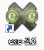
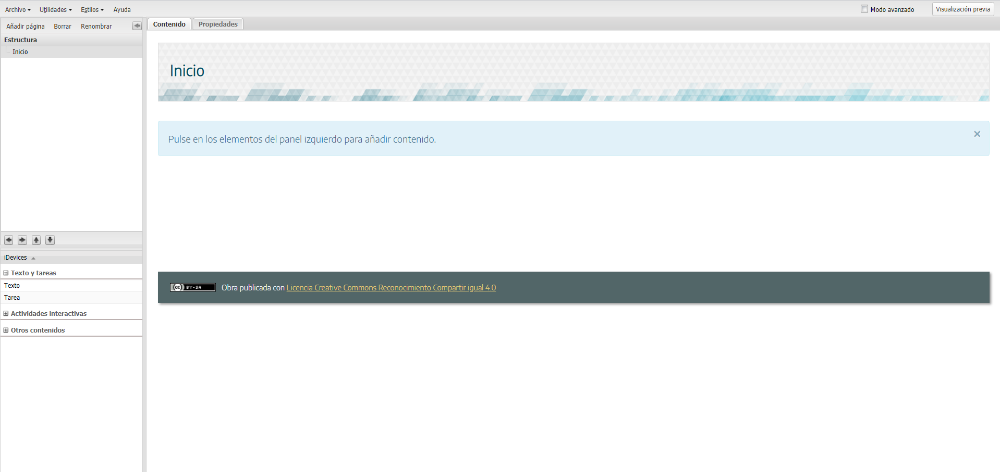
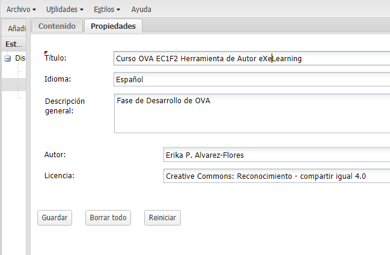

Al abrir el programa  , automáticamente les proporcionará una base dividida en cuatro zonas (MENÚ PRINCIPAL, ÁREA DE ESTRUCTURA, ÁREA DE TRABAJO y el AREA iDevices) para que desarrollen el proyecto. Deben ir a la pestaña PROPIEDADES del ÁREA DE TRABAJO para establecer el título del OVA y algunas otras características que presentará.

.
En el Menú ARCHIVO está disponible la opción GUARDAR y GUARDAR COMO, que les permitirá almacenar el proyecto en el lugar de su preferencia, para posteriormente editarlo cuantas veces lo deseen. El archivo creado será guardado con la extensión .elp. Por precaución, el sistema comenta si llevan algún tiempo sin guardarlo. Si la Plantilla base no es de su agrado y desean modificar el aspecto visual que tendrá el contenido, tendrán a su disposición otros diseños en el Menú ESTILOS, la disponibilidad de plantillas se incrementa al tener activado  o en la página Web donde descargaron el software DESCARGAS y el botón ESTILOS . Si eligieron una plantilla y posteriormente la desean sustituir por otra, lo podrán hacer sin perder la información.
o en la página Web donde descargaron el software DESCARGAS y el botón ESTILOS . Si eligieron una plantilla y posteriormente la desean sustituir por otra, lo podrán hacer sin perder la información.
La ESTRUCTURA del OVA dependerá de su diseño, tema y extensión de la información a colocar. Dependiendo donde tengan establecido el cursor dentro de la estructura, podrán Añadir página, Borrar, Renombrar y cambiar de posición cada una de las páginas (o nodos) diseñadas a partir de la página principal (solamente será un nodo de nivel principal). Si borran un Nodo, también se borrarán aquellos nodos que dependan de él.
Estos son dos vídeos que les ayudarán a comprender mejor cómo trabajar en el área de ESTRUCTURA.
Para agregar información a las páginas, debe añadirse un bloque (iDevices), por ejemplo, del tipo Texto. Esas opciones están disponibles al lado izquierdo de la pantalla, bajo el área ESTRUCTURA. En el caso del tipo Texto, podrán establecer algunos estilos y formatos, así como tener la posibilidad de agregar enlaces, imágenes, vídeos, etc. Una vez que tengan la información, requiere guardarla con el primer botón localizado en la barra inferior  . Por medio de estos botones también podrán salir sin guardar los cambios (revertir los cambios), borrar lo que han hecho, o mover el bloque a otra parte de la página o a otra de las páginas de la estructura.
. Por medio de estos botones también podrán salir sin guardar los cambios (revertir los cambios), borrar lo que han hecho, o mover el bloque a otra parte de la página o a otra de las páginas de la estructura.
Si desean editar alguna de las páginas de la estructura, solamente pasen el cursor en su ÁREA DE TRABAJO y activen la edición. Localizarán en la parte inferior los botones de EDITAR y BORRAR . Pueden utilizar la opción de VISUALIZACIÓN PREVIA (localizada arriba del área de trabajo o en el Menú Utilidades) para observar cómo quedará el proyecto en formato HTLM.
El siguiente vídeo les mostrará cómo pueden crear diferentes actividades y tantas páginas como lo requieran.
.

Para crear el índice o nodos de los contenidos.
Con dos pestañas, la pestaña CONTENIDO que permite visualizar los contenidos creados por medio de los iDevices incluidos, y la pestaña PROPIEDADES para incluir metadatos y otras características que contendrá el objeto.
En esta área podemos elegir tipos de elementos de actividades.
En esta área podemos elegir tipos de elementos de actividades.
Serie de opciones (Archivo, Utilidades, Estilos, Ayuda) para realizar diversas tareas.